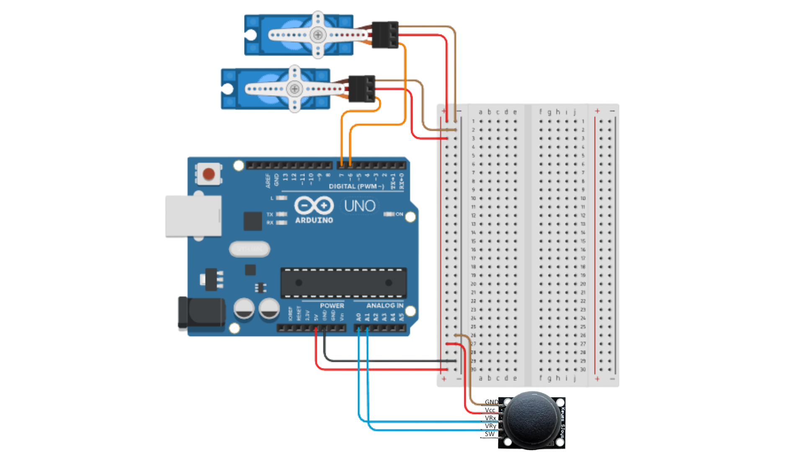

En esta página presentaré algunos de los proyectos que he realizado en mi clase de Física Aplicada a Ingeniería durante la carrera de Ingeniería de Software y Sistemas Computacionales.
El proyecto se desarrolló en el lenguaje de C ++. La calculadora tiene 25 fórmulas aplicables en 4 diferentes áreas de la física
(Física clásica, oscilaciones y ondas, electromagnetismo y termodinámica) además de una tabla de conversiones.
Código en c++ para programar la calculadora de física:
#include <iostream>
#include <iomanip>
#include <string>
#include <cmath>
using namespace std;
// ============================================================
// 1. FISICA CLASICA
// ============================================================
// Segunda Ley de Newton (F=ma)
void segundaLeyNewton() {
cout << "\n--- SEGUNDA LEY DE NEWTON (F=ma) ---\n";
cout << "Fuerza (F), Masa (m), Aceleracion (a). Elige una variable a encontrar (F, m, a): ";
char variable;
cin >> variable;
if (variable == 'F') {
double m, a;
cout << "Ingrese la masa (kg): ";
cin >> m;
cout << "Ingrese la aceleracion (m/s²): ";
cin >> a;
cout << "Fuerza (F) = " << m * a << " N\n";
} else if (variable == 'm') {
double F, a;
cout << "Ingrese la fuerza (N): ";
cin >> F;
cout << "Ingrese la aceleracion (m/s²): ";
cin >> a;
cout << "Masa (m) = " << F / a << " kg\n";
} else if (variable == 'a') {
double F, m;
cout << "Ingrese la fuerza (N): ";
cin >> F;
cout << "Ingrese la masa (kg): ";
cin >> m;
cout << "Aceleracion (a) = " << F / m << " m/s²\n";
} else {
cout << "Variable no valida.\n";
}
}
// Velocidad (V=d/t)
void velocidad() {
cout << "\n--- VELOCIDAD (V=d/t) ---\n";
cout << "Velocidad (V), Distancia (d), Tiempo (t). Elige una variable a encontrar (V, d, t): ";
char variable;
cin >> variable;
if (variable == 'V') {
double d, t;
cout << "Ingrese la distancia (m): ";
cin >> d;
cout << "Ingrese el tiempo (s): ";
cin >> t;
cout << "Velocidad (V) = " << d / t << " m/s\n";
} else if (variable == 'd') {
double V, t;
cout << "Ingrese la velocidad (m/s): ";
cin >> V;
cout << "Ingrese el tiempo (s): ";
cin >> t;
cout << "Distancia (d) = " << V * t << " m\n";
} else if (variable == 't') {
double d, V;
cout << "Ingrese la distancia (m): ";
cin >> d;
cout << "Ingrese la velocidad (m/s): ";
cin >> V;
cout << "Tiempo (t) = " << d / V << " s\n";
} else {
cout << "Variable no válida.\n";
}
}
// Peso (P=mg)
void peso() {
cout << "\n--- PESO (P=mg) ---\n";
cout << "Peso (P), Masa (m), Gravedad (g). Elige una variable a encontrar (P, m, g): ";
char variable;
cin >> variable;
if (variable == 'P') {
double m, g = 9.81;
cout << "Ingrese la masa (kg): ";
cin >> m;
cout << "Peso (P) = " << m * g << " N\n";
} else if (variable == 'm') {
double P, g = 9.81;
cout << "Ingrese el peso (N): ";
cin >> P;
cout << "Masa (m) = " << P / g << " kg\n";
} else if (variable == 'g') {
double P, m;
cout << "Ingrese el peso (N): ";
cin >> P;
cout << "Ingrese la masa (kg): ";
cin >> m;
cout << "Gravedad (g) = " << P / m << " m/s²\n";
} else {
cout << "Variable no válida.\n";
}
}
// Fuerza de friccion (f=uN)
void fuerzaFriccion() {
cout << "\n--- FUERZA DE FRICCION (f=uN) ---\n";
cout << "Fuerza de friccion (f), Coeficiente (u), Fuerza normal (N). Elige variable (f, u, N): ";
char variable;
cin >> variable;
if (variable == 'f') {
double u, N;
cout << "Ingrese el coeficiente de friccion (u): ";
cin >> u;
cout << "Ingrese la fuerza normal (N): ";
cin >> N;
cout << "Fuerza de friccion (f) = " << u * N << " N\n";
} else if (variable == 'u') {
double f, N;
cout << "Ingrese la fuerza de friccion (N): ";
cin >> f;
cout << "Ingrese la fuerza normal (N): ";
cin >> N;
cout << "Coeficiente (u) = " << f / N << "\n";
} else if (variable == 'N') {
double f, u;
cout << "Ingrese la fuerza de friccion (N): ";
cin >> f;
cout << "Ingrese el coeficiente (u): ";
cin >> u;
cout << "Fuerza normal (N) = " << f / u << " N\n";
} else {
cout << "Variable no valida.\n";
}
}
// Energia cinetica (E=1/2mv²)
void energiaCinetica() {
cout << "\n--- ENERGIA CINETICA (E=½mv²) ---\n";
cout << "Energia (E), Masa (m), Velocidad (v). Elige una variable (E, m, v): ";
char variable;
cin >> variable;
if (variable == 'E') {
double m, v;
cout << "Ingrese la masa (kg): ";
cin >> m;
cout << "Ingrese la velocidad (m/s): ";
cin >> v;
cout << "Energia (E) = " << 0.5 * m * v * v << " J\n";
} else if (variable == 'm') {
double E, v;
cout << "Ingrese la energia (J): ";
cin >> E;
cout << "Ingrese la velocidad (m/s): ";
cin >> v;
cout << "Masa (m) = " << (2 * E) / (v * v) << " kg\n";
} else if (variable == 'v') {
double E, m;
cout << "Ingrese la energia (J): ";
cin >> E;
cout << "Ingrese la masa (kg): ";
cin >> m;
cout << "Velocidad (v) = " << sqrt((2 * E) / m) << " m/s\n";
} else {
cout << "Variable no valida.\n";
}
}
// Potencia (P=W/t)
void potencia() {
cout << "\n--- POTENCIA (P=W/t) ---\n";
cout << "Potencia (P), Trabajo (W), Tiempo (t). Elige una variable (P, W, t): ";
char variable;
cin >> variable;
if (variable == 'P') {
double W, t;
cout << "Ingrese el trabajo (J): ";
cin >> W;
cout << "Ingrese el tiempo (s): ";
cin >> t;
cout << "Potencia (P) = " << W / t << " W\n";
} else if (variable == 'W') {
double P, t;
cout << "Ingrese la potencia (W): ";
cin >> P;
cout << "Ingrese el tiempo (s): ";
cin >> t;
cout << "Trabajo (W) = " << P * t << " J\n";
} else if (variable == 't') {
double W, P;
cout << "Ingrese el trabajo (J): ";
cin >> W;
cout << "Ingrese la potencia (W): ";
cin >> P;
cout << "Tiempo (t) = " << W / P << " s\n";
} else {
cout << "Variable no valida.\n";
}
}
// Ley de gravitacion universal (F=G ab/r²)
void leyGravitacionUniversal() {
cout << "\n--- LEY DE GRAVITACION UNIVERSAL ---\n";
const double G = 6.674e-11;
cout << "Fuerza (F), Masa1 (a), Masa2 (b), Distancia (r). Elige variable (F, a, b, r): ";
char variable;
cin >> variable;
if (variable == 'F') {
double a, b, r;
cout << "Masa 1 (kg): "; cin >> a;
cout << "Masa 2 (kg): "; cin >> b;
cout << "Distancia (m): "; cin >> r;
cout << "Fuerza (F) = " << (G * a * b) / (r * r) << " N\n";
} else if (variable == 'a') {
double F, b, r;
cout << "Fuerza (N): "; cin >> F;
cout << "Masa 2 (kg): "; cin >> b;
cout << "Distancia (m): "; cin >> r;
cout << "Masa 1 (a) = " << (F * r * r) / (G * b) << " kg\n";
} else if (variable == 'b') {
double F, a, r;
cout << "Fuerza (N): "; cin >> F;
cout << "Masa 1 (kg): "; cin >> a;
cout << "Distancia (m): "; cin >> r;
cout << "Masa 2 (b) = " << (F * r * r) / (G * a) << " kg\n";
} else if (variable == 'r') {
double F, a, b;
cout << "Fuerza (N): "; cin >> F;
cout << "Masa 1 (kg): "; cin >> a;
cout << "Masa 2 (kg): "; cin >> b;
cout << "Distancia (r) = " << sqrt((G * a * b) / F) << " m\n";
} else {
cout << "Variable no valida.\n";
}
}
// Densidad (p=m/v)
void densidad() {
cout << "\n--- DENSIDAD (?=m/v) ---\n";
cout << "Densidad (p), Masa (m), Volumen (v). Elige variable (p, m, v): ";
char variable;
cin >> variable;
if (variable == 'p') {
double m, v;
cout << "Masa (kg): "; cin >> m;
cout << "Volumen (m³): "; cin >> v;
cout << "Densidad (?) = " << m / v << " kg/m³\n";
} else if (variable == 'm') {
double p, v;
cout << "Densidad (kg/m³): "; cin >> p;
cout << "Volumen (m³): "; cin >> v;
cout << "Masa (m) = " << p * v << " kg\n";
} else if (variable == 'v') {
double p, m;
cout << "Densidad (kg/m³): "; cin >> p;
cout << "Masa (kg): "; cin >> m;
cout << "Volumen (v) = " << m / p << " m³\n";
} else {
cout << "Variable no valida.\n";
}
}
// Presion (P=F/A)
void presion() {
cout << "\n--- PRESION (P=F/A) ---\n";
cout << "Presion (P), Fuerza (F), Area (A). Elige variable (P, F, A): ";
char variable;
cin >> variable;
if (variable == 'P') {
double F, A;
cout << "Fuerza (N): "; cin >> F;
cout << "Area (m²): "; cin >> A;
cout << "Presion (P) = " << F / A << " Pa\n";
} else if (variable == 'F') {
double P, A;
cout << "Presion (Pa): "; cin >> P;
cout << "Area (m²): "; cin >> A;
cout << "Fuerza (F) = " << P * A << " N\n";
} else if (variable == 'A') {
double P, F;
cout << "Presion (Pa): "; cin >> P;
cout << "Fuerza (N): "; cin >> F;
cout << "Area (A) = " << F / P << " m²\n";
} else {
cout << "Variable no valida.\n";
}
}
// Presion hidrostatica (P=pgh)
void presionHidrostatica() {
cout << "\n--- PRESION HIDROSTATICA (P=?gh) ---\n";
const double g = 9.81;
cout << "Presion (P), Densidad (p), Profundidad (h). Elige variable (P, p, h): ";
char variable;
cin >> variable;
if (variable == 'P') {
double p, h;
cout << "Densidad (kg/m³): "; cin >> p;
cout << "Profundidad (m): "; cin >> h;
cout << "Presion (P) = " << p * g * h << " Pa\n";
} else if (variable == 'p') {
double P, h;
cout << "Presion (Pa): "; cin >> P;
cout << "Profundidad (m): "; cin >> h;
cout << "Densidad (kg/m³) = " << P / (g * h) << " kg/m³\n";
} else if (variable == 'h') {
double P, p;
cout << "Presion (Pa): "; cin >> P;
cout << "Densidad (kg/m³): "; cin >> p;
cout << "Profundidad (h) = " << P / (p * g) << " m\n";
} else {
cout << "Variable no valida.\n";
}
}
// ============================================================
// 2. OSCILACIONES Y ONDAS
// ============================================================
// Longitud de pendulo simple L=g*(T/2p)²
void longitudPenduloSimple() {
cout << "\n--- PENDULO SIMPLE ---\n";
const double g = 9.81;
cout << "Longitud (L), Periodo (T). Elige variable (L, T): ";
char variable;
cin >> variable;
if (variable == 'L') {
double T;
cout << "Periodo (s): "; cin >> T;
cout << "Longitud (L) = " << (g * T * T) / (4 * M_PI * M_PI) << " m\n";
} else if (variable == 'T') {
double L;
cout << "Longitud (m): "; cin >> L;
cout << "Periodo (T) = " << 2 * M_PI * sqrt(L / g) << " s\n";
} else {
cout << "Variable no valida.\n";
}
}
// Velocidad de una onda (v=d·f)
void velocidadOnda() {
cout << "\n--- VELOCIDAD DE ONDA (v=df) ---\n";
cout << "Velocidad (v), Longitud onda (d), Frecuencia (f). Elige variable (v, d, f): ";
char variable;
cin >> variable;
if (variable == 'v') {
double d, f;
cout << "Longitud de onda (m): "; cin >> d;
cout << "Frecuencia (Hz): "; cin >> f;
cout << "Velocidad (v) = " << d * f << " m/s\n";
} else if (variable == 'd') {
double v, f;
cout << "Velocidad (m/s): "; cin >> v;
cout << "Frecuencia (Hz): "; cin >> f;
cout << "Longitud de onda (?) = " << v / f << " m\n";
} else if (variable == 'f') {
double v, d;
cout << "Velocidad (m/s): "; cin >> v;
cout << "Longitud de onda (m): "; cin >> d;
cout << "Frecuencia (f) = " << v / d << " Hz\n";
} else {
cout << "Variable no valida.\n";
}
}
// Energia oscilador armonico (E=½KA²)
void energiaOscilador() {
cout << "\n--- ENERGIA OSCILADOR ARMONICO ---\n";
cout << "Energia (E), Constante (K), Amplitud (A). Elige variable (E, K, A): ";
char variable;
cin >> variable;
if (variable == 'E') {
double K, A;
cout << "Constante (N/m): "; cin >> K;
cout << "Amplitud (m): "; cin >> A;
cout << "Energia (E) = " << 0.5 * K * A * A << " J\n";
} else if (variable == 'K') {
double E, A;
cout << "Energia (J): "; cin >> E;
cout << "Amplitud (m): "; cin >> A;
cout << "Constante (K) = " << (2 * E) / (A * A) << " N/m\n";
} else if (variable == 'A') {
double E, K;
cout << "Energia (J): "; cin >> E;
cout << "Constante (N/m): "; cin >> K;
cout << "Amplitud (A) = " << sqrt((2 * E) / K) << " m\n";
} else {
cout << "Variable no valida.\n";
}
}
// Frecuencia angular 'resorte' (w² = K/m)
void frecuenciaAngularResorte() {
cout << "\n--- FRECUENCIA ANGULAR (w²=K/m) ---\n";
cout << "Frecuencia angular (w), Constante (K), Masa (m). Elige variable (w, K, m): ";
char variable;
cin >> variable;
if (variable == 'w') {
double K, m;
cout << "Constante (N/m): "; cin >> K;
cout << "Masa (kg): "; cin >> m;
if (m != 0) cout << "Frecuencia angular (w) = " << sqrt(K / m) << " rad/s\n";
else cout << "Error: masa no puede ser cero.\n";
} else if (variable == 'K') {
double w, m;
cout << "Frecuencia angular (rad/s): "; cin >> w;
cout << "Masa (kg): "; cin >> m;
cout << "Constante (K) = " << w * w * m << " N/m\n";
} else if (variable == 'm') {
double w, K;
cout << "Frecuencia angular (rad/s): "; cin >> w;
cout << "Constante (N/m): "; cin >> K;
if (w != 0) cout << "Masa (m) = " << K / (w * w) << " kg\n";
else cout << "Error: w no puede ser cero.\n";
} else {
cout << "Variable no valida.\n";
}
}
// Numero de onda (k = 2p/l)
void numeroDeOnda() {
cout << "\n--- NUMERO DE ONDA (k=2p/l) ---\n";
cout << "Numero de onda (k), Longitud de onda (l). Elige variable (k, l): ";
char variable;
cin >> variable;
if (variable == 'k') {
double l;
cout << "Longitud de onda (m): "; cin >> l;
if (l != 0) cout << "Numero de onda (k) = " << (2 * M_PI) / l << " rad/m\n";
else cout << "Error: l no puede ser cero.\n";
} else if (variable == 'l') {
double k;
cout << "Número de onda (rad/m): "; cin >> k;
if (k != 0) cout << "Longitud de onda (l) = " << (2 * M_PI) / k << " m\n";
else cout << "Error: k no puede ser cero.\n";
} else {
cout << "Variable no valida.\n";
}
}
// ============================================================
// 3. ELECTROMAGNETISMO
// ============================================================
// Ley de Coulomb (F=K|q1q2|/r²)
void leyCoulomb() {
cout << "\n--- LEY DE COULOMB ---\n";
const double K = 8.99e9;
cout << "Fuerza (F), Carga1 (a), Carga2 (b), Distancia (r). Elige variable (F, a, b, r): ";
char variable;
cin >> variable;
if (variable == 'F') {
double a, b, r;
cout << "Carga 1 (C): "; cin >> a;
cout << "Carga 2 (C): "; cin >> b;
cout << "Distancia (m): "; cin >> r;
cout << "Fuerza (F) = " << (K * abs(a * b)) / (r * r) << " N\n";
} else if (variable == 'a') {
double F, b, r;
cout << "Fuerza (N): "; cin >> F;
cout << "Carga 2 (C): "; cin >> b;
cout << "Distancia (m): "; cin >> r;
cout << "Carga 1 (q1) = " << (F * r * r) / (K * abs(b)) << " C\n";
} else if (variable == 'b') {
double F, a, r;
cout << "Fuerza (N): "; cin >> F;
cout << "Carga 1 (C): "; cin >> a;
cout << "Distancia (m): "; cin >> r;
cout << "Carga 2 (q2) = " << (F * r * r) / (K * abs(a)) << " C\n";
} else if (variable == 'r') {
double F, a, b;
cout << "Fuerza (N): "; cin >> F;
cout << "Carga 1 (C): "; cin >> a;
cout << "Carga 2 (C): "; cin >> b;
cout << "Distancia (r) = " << sqrt((K * abs(a * b)) / F) << " m\n";
} else {
cout << "Variable no valida.\n";
}
}
// Ley de Ohm (V=IR)
void leyOhm() {
cout << "\n--- LEY DE OHM ---\n";
cout << "Voltaje (V), Intensidad (I), Resistencia (R). Elige variable (V, I, R): ";
char variable;
cin >> variable;
if (variable == 'V') {
double I, R;
cout << "Intensidad (A): "; cin >> I;
cout << "Resistencia (O): "; cin >> R;
cout << "Voltaje (V) = " << I * R << " V\n";
} else if (variable == 'I') {
double V, R;
cout << "Voltaje (V): "; cin >> V;
cout << "Resistencia (O): "; cin >> R;
cout << "Intensidad (I) = " << V / R << " A\n";
} else if (variable == 'R') {
double V, I;
cout << "Voltaje (V): "; cin >> V;
cout << "Intensidad (A): "; cin >> I;
cout << "Resistencia (R) = " << V / I << " O\n";
} else {
cout << "Variable no valida.\n";
}
}
// Campo electrico (E=Kq/r²)
void campoElectrico() {
cout << "\n--- CAMPO ELECTRICO ---\n";
const double K = 8.99e9;
cout << "Campo (E), Carga (q), Distancia (r). Elige variable (E, q, r): ";
char variable;
cin >> variable;
if (variable == 'E') {
double q, r;
cout << "Carga (C): "; cin >> q;
cout << "Distancia (m): "; cin >> r;
cout << "Campo (E) = " << (K * q) / (r * r) << " N/C\n";
} else if (variable == 'q') {
double E, r;
cout << "Campo (N/C): "; cin >> E;
cout << "Distancia (m): "; cin >> r;
cout << "Carga (q) = " << (E * r * r) / K << " C\n";
} else if (variable == 'r') {
double E, q;
cout << "Campo (N/C): "; cin >> E;
cout << "Carga (C): "; cin >> q;
cout << "Distancia (r) = " << sqrt((K * q) / E) << " m\n";
} else {
cout << "Variable no valida.\n";
}
}
// Potencia electrica (P=VI)
void potenciaElectrica() {
cout << "\n--- POTENCIA ELECTRICA ---\n";
cout << "Potencia (P), Voltaje (V), Intensidad (I). Elige variable (P, V, I): ";
char variable;
cin >> variable;
if (variable == 'P') {
double V, I;
cout << "Voltaje (V): "; cin >> V;
cout << "Intensidad (A): "; cin >> I;
cout << "Potencia (P) = " << V * I << " W\n";
} else if (variable == 'V') {
double P, I;
cout << "Potencia (W): "; cin >> P;
cout << "Intensidad (A): "; cin >> I;
cout << "Voltaje (V) = " << P / I << " V\n";
} else if (variable == 'I') {
double P, V;
cout << "Potencia (W): "; cin >> P;
cout << "Voltaje (V): "; cin >> V;
cout << "Intensidad (I) = " << P / V << " A\n";
} else {
cout << "Variable no valida.\n";
}
}
// Ley de Faraday (e=-N(F/t))
void leyFaraday() {
cout << "\n--- LEY DE FARADAY ---\n";
cout << "FEM (e), Vueltas (N), Cambio flujo (F), Tiempo (t). Elige variable (e, N, F, t): ";
char variable;
cin >> variable;
if (variable == 'e') {
double N, F, t;
cout << "Numero de vueltas: "; cin >> N;
cout << "Cambio de flujo (Wb): "; cin >> F;
cout << "Tiempo (s): "; cin >> t;
cout << "FEM (e) = " << -N * (F / t) << " V\n";
} else if (variable == 'N') {
double e, F, t;
cout << "FEM (V): "; cin >> e;
cout << "Cambio de flujo (Wb): "; cin >> F;
cout << "Tiempo (s): "; cin >> t;
cout << "Vueltas (N) = " << -e * t / F << "\n";
} else if (variable == 'F') {
double e, N, t;
cout << "FEM (V): "; cin >> e;
cout << "Vueltas (N): "; cin >> N;
cout << "Tiempo (s): "; cin >> t;
cout << "Cambio de flujo (F) = " << -e * t / N << " Wb\n";
} else if (variable == 't') {
double e, N, F;
cout << "FEM (V): "; cin >> e;
cout << "Vueltas (N): "; cin >> N;
cout << "Cambio de flujo (Wb): "; cin >> F;
cout << "Tiempo (t) = " << -N * F / e << " s\n";
} else {
cout << "Variable no valida.\n";
}
}
// ============================================================
// 4. TERMODINAMICA
// ============================================================
// Primera ley termodinamica (U=Q-W)
void primeraLeyTermodinamica() {
cout << "\n--- PRIMERA LEY (U=Q-W) ---\n";
cout << "Energia interna (U), Calor (Q), Trabajo (W). Elige variable (U, Q, W): ";
char variable;
cin >> variable;
if (variable == 'U') {
double Q, W;
cout << "Calor (J): "; cin >> Q;
cout << "Trabajo (J): "; cin >> W;
cout << "Energia interna (?U) = " << Q - W << " J\n";
} else if (variable == 'Q') {
double U, W;
cout << "Energia interna (J): "; cin >> U;
cout << "Trabajo (J): "; cin >> W;
cout << "Calor (Q) = " << U + W << " J\n";
} else if (variable == 'W') {
double U, Q;
cout << "Energia interna (J): "; cin >> U;
cout << "Calor (J): "; cin >> Q;
cout << "Trabajo (W) = " << Q - U << " J\n";
} else {
cout << "Variable no valida.\n";
}
}
// Calor sensible (Q=mcT)
void calorSensible() {
cout << "\n--- CALOR SENSIBLE (Q=mc?T) ---\n";
cout << "Calor (Q), Masa (m), Calor específico (c), Temperatura (T). Elige variable (Q, m, c, T): ";
char variable;
cin >> variable;
if (variable == 'Q') {
double m, c, T;
cout << "Masa (kg): "; cin >> m;
cout << "Calor específico (J/kg·K): "; cin >> c;
cout << "Temperatura (K): "; cin >> T;
cout << "Calor (Q) = " << m * c * T << " J\n";
} else if (variable == 'm') {
double Q, c, T;
cout << "Calor (J): "; cin >> Q;
cout << "Calor específico (J/kg·K): "; cin >> c;
cout << "Temperatura (K): "; cin >> T;
cout << "Masa (m) = " << Q / (c * T) << " kg\n";
} else if (variable == 'c') {
double Q, m, T;
cout << "Calor (J): "; cin >> Q;
cout << "Masa (kg): "; cin >> m;
cout << "Temperatura (K): "; cin >> T;
cout << "Calor especifico (c) = " << Q / (m * T) << " J/kg·K\n";
} else if (variable == 'T') {
double Q, m, c;
cout << "Calor (J): "; cin >> Q;
cout << "Masa (kg): "; cin >> m;
cout << "Calor especifico (J/kg·K): "; cin >> c;
cout << "Temperatura (T) = " << Q / (m * c) << " K\n";
} else {
cout << "Variable no valida.\n";
}
}
// Calor latente (Q=mL)
void calorLatente() {
cout << "\n--- CALOR LATENTE (Q=mL) ---\n";
cout << "Calor (Q), Masa (m), Calor latente (L). Elige variable (Q, m, L): ";
char variable;
cin >> variable;
if (variable == 'Q') {
double m, L;
cout << "Masa (kg): "; cin >> m;
cout << "Calor latente (J/kg): "; cin >> L;
cout << "Calor (Q) = " << m * L << " J\n";
} else if (variable == 'm') {
double Q, L;
cout << "Calor (J): "; cin >> Q;
cout << "Calor latente (J/kg): "; cin >> L;
cout << "Masa (m) = " << Q / L << " kg\n";
} else if (variable == 'L') {
double Q, m;
cout << "Calor (J): "; cin >> Q;
cout << "Masa (kg): "; cin >> m;
cout << "Calor latente (L) = " << Q / m << " J/kg\n";
} else {
cout << "Variable no valida.\n";
}
}
// Estado del gas ideal (PV=nRT)
void estadoGasIdeal() {
cout << "\n--- GAS IDEAL (PV=nRT) ---\n";
const double R = 8.314;
cout << "Presion (P), Volumen (V), moles (n), Temp (T). Elige variable (P, V, n, T): ";
char variable;
cin >> variable;
if (variable == 'P') {
double V, n, T;
cout << "Volumen (m³): "; cin >> V;
cout << "Moles (mol): "; cin >> n;
cout << "Temperatura (K): "; cin >> T;
cout << "Presion (P) = " << (n * R * T) / V << " Pa\n";
} else if (variable == 'V') {
double P, n, T;
cout << "Presion (Pa): "; cin >> P;
cout << "Moles (mol): "; cin >> n;
cout << "Temperatura (K): "; cin >> T;
cout << "Volumen (V) = " << (n * R * T) / P << " m³\n";
} else if (variable == 'n') {
double P, V, T;
cout << "Presion (Pa): "; cin >> P;
cout << "Volumen (m³): "; cin >> V;
cout << "Temperatura (K): "; cin >> T;
cout << "Moles (n) = " << (P * V) / (R * T) << " mol\n";
} else if (variable == 'T') {
double P, V, n;
cout << "Presion (Pa): "; cin >> P;
cout << "Volumen (m³): "; cin >> V;
cout << "Moles (mol): "; cin >> n;
cout << "Temperatura (T) = " << (P * V) / (n * R) << " K\n";
} else {
cout << "Variable no valida.\n";
}
}
// Ley de Boyle (P1V1 = P2V2)
void leyBoyle() {
cout << "\n--- LEY DE BOYLE (P1V1=P2V2) ---\n";
cout << "Presion1 (A), Presion2 (a), Volumen1 (B), Volumen2 (b). Elige variable (A, a, B, b): ";
char variable;
cin >> variable;
if (variable == 'A') {
double a, B, b;
cout << "Presion 2 (Pa): "; cin >> a;
cout << "Volumen 1 (m³): "; cin >> B;
cout << "Volumen 2 (m³): "; cin >> b;
if (B != 0) cout << "Presion 1 (P1) = " << (a * b) / B << " Pa\n";
else cout << "Error: V1 no puede ser cero.\n";
} else if (variable == 'a') {
double A, B, b;
cout << "Presion 1 (Pa): "; cin >> A;
cout << "Volumen 1 (m³): "; cin >> B;
cout << "Volumen 2 (m³): "; cin >> b;
if (b != 0) cout << "Presion 2 (P2) = " << (A * B) / b << " Pa\n";
else cout << "Error: V2 no puede ser cero.\n";
} else if (variable == 'B') {
double A, a, b;
cout << "Presion 1 (Pa): "; cin >> A;
cout << "Presion 2 (Pa): "; cin >> a;
cout << "Volumen 2 (m³): "; cin >> b;
if (A != 0) cout << "Volumen 1 (V1) = " << (a * b) / A << " m³\n";
else cout << "Error: P1 no puede ser cero.\n";
} else if (variable == 'b') {
double A, B, a;
cout << "Presion 1 (Pa): "; cin >> A;
cout << "Volumen 1 (m³): "; cin >> B;
cout << "Presion 2 (Pa): "; cin >> a;
if (a != 0) cout << "Volumen 2 (V2) = " << (A * B) / a << " m³\n";
else cout << "Error: P2 no puede ser cero.\n";
} else {
cout << "Variable no válida.\n";
}
}
// ============================================================
// 5. TABLA DE CONVERSIONES
// ============================================================
void conversiones() {
int opcion;
double valor;
do {
cout << "\n--- TABLA DE CONVERSIONES ---\n";
cout << "1. Kilometros a Metros\n";
cout << "2. Metros a Kilometros\n";
cout << "3. Kilogramos a Gramos\n";
cout << "4. Gramos a Kilogramos\n";
cout << "5. Metros a Centimetros\n";
cout << "6. Centimetros a Metros\n";
cout << "7. Litros a Mililitros\n";
cout << "8. Mililitros a Litros\n";
cout << "0. Volver al menú principal\n";
cout << "Seleccione: ";
cin >> opcion;
if (opcion >= 1 && opcion <= 8) {
cout << "Ingrese el valor: ";
cin >> valor;
}
switch (opcion) {
case 1: cout << valor << " km = " << valor * 1000 << " m\n"; break;
case 2: cout << valor << " m = " << valor / 1000 << " km\n"; break;
case 3: cout << valor << " kg = " << valor * 1000 << " g\n"; break;
case 4: cout << valor << " g = " << valor / 1000 << " kg\n"; break;
case 5: cout << valor << " m = " << valor * 100 << " cm\n"; break;
case 6: cout << valor << " cm = " << valor / 100 << " m\n"; break;
case 7: cout << valor << " L = " << valor * 1000 << " mL\n"; break;
case 8: cout << valor << " mL = " << valor / 1000 << " L\n"; break;
case 0: break;
default: cout << "Opción no válida.\n";
}
if (opcion != 0) {
cout << "\nPresione Enter para continuar...";
cin.ignore();
cin.get();
}
} while (opcion != 0);
}
// ============================================================
// MENUS DE CATEGORIAS
// ============================================================
void menuFisicaClasica() {
int opcion;
do {
cout << "\n+--------------------------------------+\n";
cout << "¦ 1. FISICA CLASICA ¦\n";
cout << "¦--------------------------------------¦\n";
cout << "¦ 1. Segunda Ley de Newton (F=ma) ¦\n";
cout << "¦ 2. Velocidad (V=d/t) ¦\n";
cout << "¦ 3. Peso (P=mg) ¦\n";
cout << "¦ 4. Fuerza de friccion (f=uN) ¦\n";
cout << "¦ 5. Energia cinetica (E=½mv²) ¦\n";
cout << "¦ 6. Potencia (P=W/t) ¦\n";
cout << "¦ 7. Ley de gravitacion universal ¦\n";
cout << "¦ 8. Densidad (P=m/V) ¦\n";
cout << "¦ 9. Presion (P=F/A) ¦\n";
cout << "¦ 10. Presion hidrostatica (P=pgh) ¦\n";
cout << "¦ 0. Volver al menu principal ¦\n";
cout << "+--------------------------------------+\n";
cout << "Seleccione: ";
cin >> opcion;
switch(opcion) {
case 1: segundaLeyNewton(); break;
case 2: velocidad(); break;
case 3: peso(); break;
case 4: fuerzaFriccion(); break;
case 5: energiaCinetica(); break;
case 6: potencia(); break;
case 7: leyGravitacionUniversal(); break;
case 8: densidad(); break;
case 9: presion(); break;
case 10: presionHidrostatica(); break;
case 0: break;
default: cout << "Opción inválida.\n";
}
if (opcion != 0) {
cout << "\nPresione Enter para continuar...";
cin.ignore(); cin.get();
}
} while (opcion != 0);
}
void menuOscilacionesOndas() {
int opcion;
do {
cout << "\n+--------------------------------------+\n";
cout << "¦ 2. OSCILACIONES Y ONDAS ¦\n";
cout << "¦--------------------------------------¦\n";
cout << "¦ 1. Longitud de pendulo simple ¦\n";
cout << "¦ 2. Velocidad de onda (v=df) ¦\n";
cout << "¦ 3. Energia oscilador armónico ¦\n";
cout << "¦ 4. Frecuencia angular (w²=K/m) ¦\n";
cout << "¦ 5. Numero de onda (k=2p/l) ¦\n";
cout << "¦ 0. Volver al menu principal ¦\n";
cout << "+--------------------------------------+\n";
cout << "Seleccione: ";
cin >> opcion;
switch(opcion) {
case 1: longitudPenduloSimple(); break;
case 2: velocidadOnda(); break;
case 3: energiaOscilador(); break;
case 4: frecuenciaAngularResorte(); break;
case 5: numeroDeOnda(); break;
case 0: break;
default: cout << "Opción inválida.\n";
}
if (opcion != 0) {
cout << "\nPresione Enter para continuar...";
cin.ignore(); cin.get();
}
} while (opcion != 0);
}
void menuElectromagnetismo() {
int opcion;
do {
cout << "\n+--------------------------------------+\n";
cout << "¦ 3. ELECTROMAGNETISMO ¦\n";
cout << "¦--------------------------------------¦\n";
cout << "¦ 1. Ley de Coulomb ¦\n";
cout << "¦ 2. Ley de Ohm (V=IR) ¦\n";
cout << "¦ 3. Campo electrico ¦\n";
cout << "¦ 4. Potencia electrica (P=VI) ¦\n";
cout << "¦ 5. Ley de Faraday ¦\n";
cout << "¦ 0. Volver al menu principal ¦\n";
cout << "+--------------------------------------+\n";
cout << "Seleccione: ";
cin >> opcion;
switch(opcion) {
case 1: leyCoulomb(); break;
case 2: leyOhm(); break;
case 3: campoElectrico(); break;
case 4: potenciaElectrica(); break;
case 5: leyFaraday(); break;
case 0: break;
default: cout << "Opción inválida.\n";
}
if (opcion != 0) {
cout << "\nPresione Enter para continuar...";
cin.ignore(); cin.get();
}
} while (opcion != 0);
}
void menuTermodinamica() {
int opcion;
do {
cout << "\n+--------------------------------------+\n";
cout << "¦ 4. TERMODINAMICA ¦\n";
cout << "¦--------------------------------------¦\n";
cout << "¦ 1. Primera ley (U=Q-W) ¦\n";
cout << "¦ 2. Calor sensible (Q=mcT) ¦\n";
cout << "¦ 3. Calor latente (Q=mL) ¦\n";
cout << "¦ 4. Gas ideal (PV=nRT) ¦\n";
cout << "¦ 5. Ley de Boyle (P1V1=P2V2) ¦\n";
cout << "¦ 0. Volver al menú principal ¦\n";
cout << "+--------------------------------------+\n";
cout << "Seleccione: ";
cin >> opcion;
switch(opcion) {
case 1: primeraLeyTermodinamica(); break;
case 2: calorSensible(); break;
case 3: calorLatente(); break;
case 4: estadoGasIdeal(); break;
case 5: leyBoyle(); break;
case 0: break;
default: cout << "Opción inválida.\n";
}
if (opcion != 0) {
cout << "\nPresione Enter para continuar...";
cin.ignore(); cin.get();
}
} while (opcion != 0);
}
// ============================================================
// FUNCIÓN MAIN - MENÚ PRINCIPAL
// ============================================================
int main() {
int opcionPrincipal;
do {
cout <<"Supervisado por Tania del Rosario Pech Lopez";
cout << "\n+----------------------------------------------------+\n";
cout << "¦ CALCULADORA DE FISICA - MENU PRINCIPAL ¦\n";
cout << "¦----------------------------------------------------¦\n";
cout << "¦ 1. Fisica Clasica ¦\n";
cout << "¦ 2. Oscilaciones y Ondas ¦\n";
cout << "¦ 3. Electromagnetismo ¦\n";
cout << "¦ 4. Termodinamica ¦\n";
cout << "¦ 5. Tabla de Conversiones ¦\n";
cout << "¦ 0. Salir ¦\n";
cout << "+----------------------------------------------------+\n";
cout << "Seleccione una opcion: ";
cin >> opcionPrincipal;
switch(opcionPrincipal) {
case 1: menuFisicaClasica(); break;
case 2: menuOscilacionesOndas(); break;
case 3: menuElectromagnetismo(); break;
case 4: menuTermodinamica(); break;
case 5: conversiones(); break;
case 0:
cout << "\n¡Gracias por usar la calculadora de fisica!\n";
break;
default:
cout << "\nOpción no válida. Intente de nuevo.\n";
}
} while (opcionPrincipal != 0);
return 0;
}
El objetivo de este proyecto fue programar una placa arduino para que con otros elemntos se desarrollará un prototipo de electrónica
sencillo.Para el proyecto se hace uso de una placa arduino, dos servomotores, un joystick y una protoboard.
*Placa Arduino
*Dos servomotores
*Un joystick
*Un protoboard
*Materieles para la estructura (Cartón, abatelenguas, silicón, etc.)
Video del funcionamiento del proyecto:
Imagen con las conexiones:

Código para programar el arduino en IDE:
#include <Servo.h>
Servo servoBase; // Pin 7
Servo servoBrazo; // Pin 6
void setup() {
servoBase.attach(7);
servoBrazo.attach(6);
servoBase.write(90);
servoBrazo.write(90);
}
void loop() {
// 1. Leer los valores del Joystick (rango de 0 a 1023)
int lecturaX = analogRead(A0); // Eje VRX
int lecturaY = analogRead(A1); // Eje VRY
// 2. Convertir (mapear) el valor del Joystick al rango del Servo (0 a 180)
// map(valor_entrada, min_entrada, max_entrada, min_salida, max_salida)
int anguloBase = map(lecturaX, 0, 1023, 0, 180);
int anguloBrazo = map(lecturaY, 0, 1023, 0, 180);
// 3. Enviar la posición a los servomotores
servoBase.write(anguloBase);
servoBrazo.write(anguloBrazo);
// Pequeña pausa para que los servos tengan tiempo de llegar a la posición
// y para no saturar el procesador del Arduino
delay(15);
}
Espero ambos proyectos sean de ayuda en sus trabajos!!